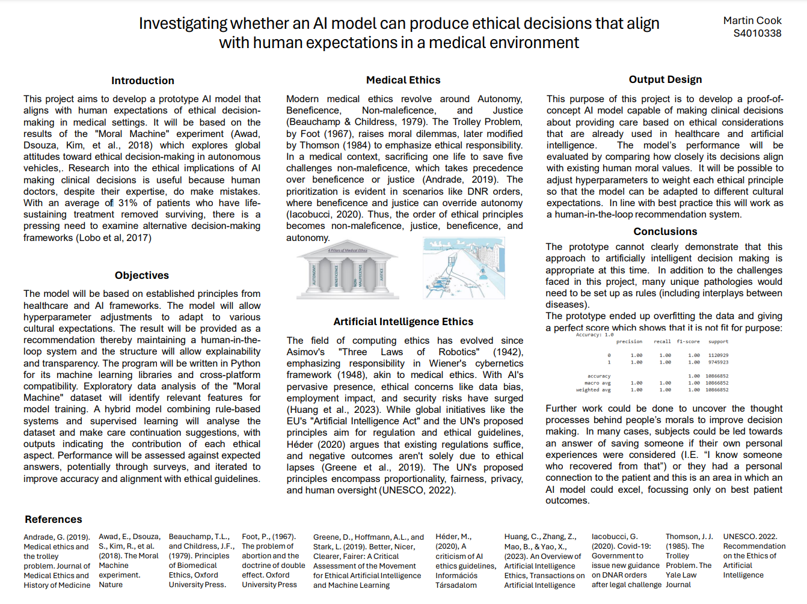

Project Image
Overview
This project explores the ethical implications of AI-driven decision-making in medical emergencies, using data from the widely studied 'Moral Machine' dataset.
Key Findings
- AI systems can reflect human biases present in training data.
- Different cultures prioritize different ethical principles in life-or-death decisions.
- Transparency and explainability remain crucial for AI acceptance in medicine.